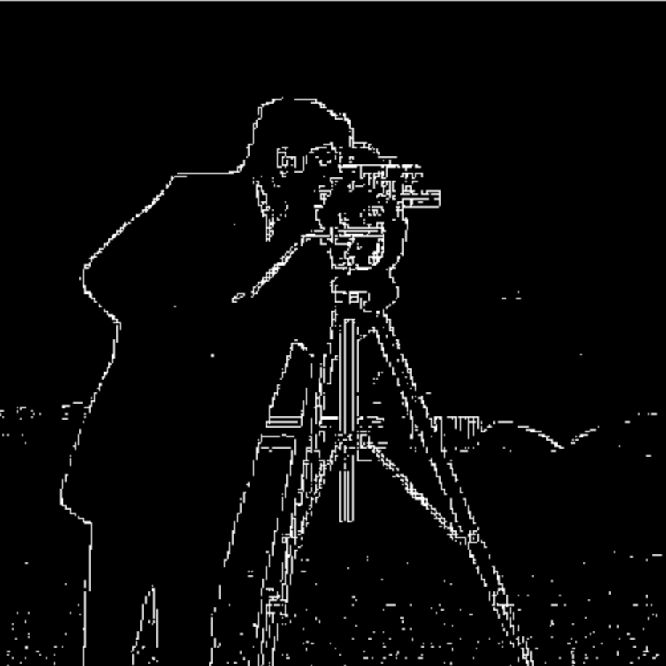

Cameraman Original Image
Gradient Magnitude Image of Cameraman

Binarized Gradient Magnitude Image of Cameraman
This project focusses on first building the intuition needed for 2D convolutions and filtering before using frequencies to sharpen images, combine two images into one, blend two images using multiresolution blending.
First, I showed the partial derivative in x and y of the cameraman image by convolving the image with finite difference operators D_x and D_y. To accomplish this, I used convolve2d from the scipy.signal library. Then, I computed and showed the gradient magnitude image. To turn this into an edge image, I binarized the gradient magnitude image by choosing the appropriate threshold, which took a couple tries to get right.
I noticed that the results with just the finite difference operators D_x and D_y were quite noisy so I used a smoothing operator called the Gaussian filter. I created the gaussian filter by first creating a 1D Gaussian Kernel using cv2.getGaussianKernel(ksize, sigma) and then I took the outer product with its transpose to get a 2D gaussian kernel. We can create a blurred version of the original image by convolving with this gaussian kernel and repeat the procedure in the previous part.
I see the following differences:
I now do the same thing with a single convolution instead of two by creating a derivative of gaussian filters. First, I convolve the gaussian with D_x and D_y. Then, I display the resulting DoG filters as images. I verify that I get the same result as before.
In this part, we will derive the unsharp masking technique. The Gaussian filter is a low pass filter that retains only the low frequencies. Therefore, if we subtract the blurred version from the original image, we can get the high frequenciea of the image which can make the image look sharper. We combine this all into a single convolution operation which is called the unsharp mask filter.


Here is a sharp image that I blurred and then sharpened again:

The goal of this part of the assignment is to create hybrid images using the approach described in the SIGGRAPH 2006 paper by Oliva, Torralba, and Schyns. Hybrid images are static images that change in interpretation as a function of the viewing distance. The basic idea is that high frequency tends to dominate perception when it is available, but, at a distance, only the low frequency (smooth) part of the signal can be seen. By blending the high frequency portion of one image with the low-frequency portion of another, you get a hybrid image that leads to different interpretations at different distances.
Here are the sample images I used for debugging and the hybrid image produced from them:


In order to create this hybrid image, I wrote code to low-pass filter one image by using a Gaussian filter, high-pass filter the second image by subtracting the blurred image from the original image, and then averaged the two images to produce the final hybrid image. For a low-pass filter, Oliva et al. suggested using a standard 2D Gaussian filter. For a high-pass filter, they suggest using the impulse filter minus the Gaussian filter (which can be computed by subtracting the Gaussian-filtered image from the original). I chose the cutoff-frequency of each filter by doing some experimentation.
My favorite result is the hybrid image of Nadal and Federer so I also illustrated the process through frequency analysis. I showed the log magnitude of the Fourier transform of the two input images, the filtered images, and the hybrid image using: plt.imshow(np.log(np.abs(np.fft.fftshift(np.fft.fft2(gray_image)))))


This is an example of a failure case because it is quite difficult to see the tiger:

The goal of this part of the assignment is to blend two images seamlessly using multi resolution blending as described in the 1983 paper by Burt and Adelson. An image spline is a smooth seam joining two image together by gently distorting them. Multiresolution blending computes a gentle seam between the two images seperately at each band of image frequencies, resulting in a much smoother seam. First, I create and visualize the Gaussian and Laplacian stacks and using the stacks, I blend together images. Therefore, for this part I implemented the Gaussian and Laplacian stacks, which are similar to pyramids but without the downsampling. This will prepare me for the next step for Multi-resolution blending.


In this part, we will mainly focus on blending two images together. First, I wrote some code to use my Gaussian and Laplacian stacks from the previous part to blend the images together.
Here are the sample images I used for debugging:
Here are my own images I used for debugging: